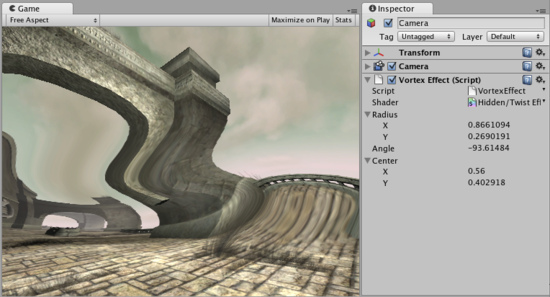

Vortex image effect
Vortex image effect distorts the rendered image. Similar to Twirl, it distorts the image in a circular region.
Like all image effects, Vortex is available in Unity Pro only. Make sure to have the Pro Standard Assets installed.

Vortex image effect applied to the scene
Vortex image effect applied to the scene
| Radius | The radii of the ellipse where image distortion takes place. Radius of 0.5 is half the size of the screen. |
| Angle | Controls the amount of distortion applied. |
| Center | Position the distortion area on the screen. |
Hardware support
Vortex works on graphics cards with support for pixel shaders (2.0). E.g. GeForce FX 5200 or Radeon 9500 and up. All image effects automatically disable themselves when they can not run on an end-users graphics card.